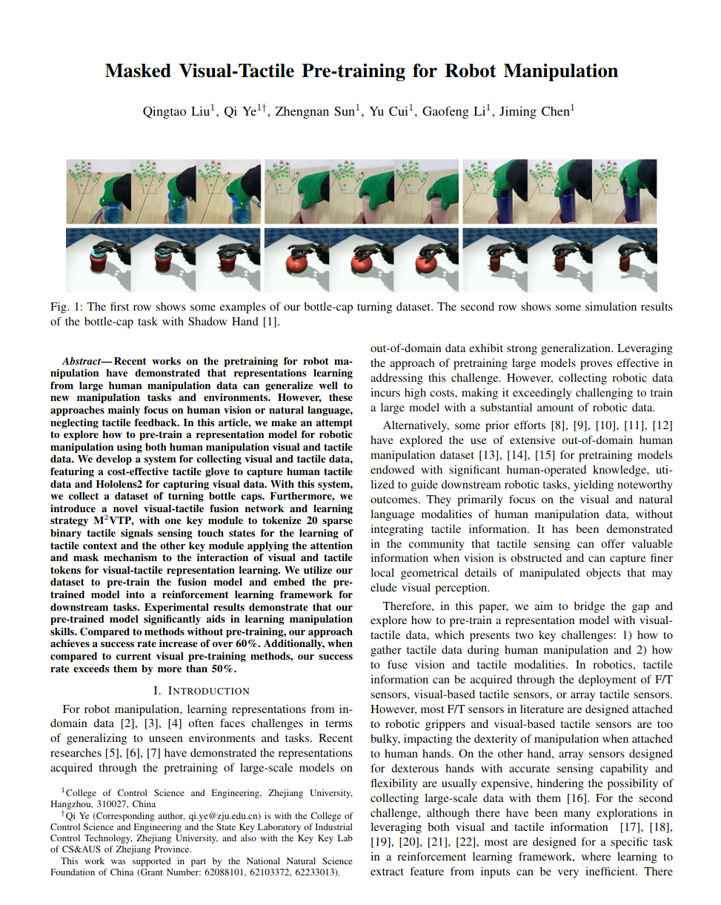

|  |
@inproceedings{liu2024m2vtp, title={Masked Visual-Tactile Pre-training for Robot Manipulation}, author={Liu, Qingtao and Ye, Qi and Sun, Zhengnan and Cui, Yu and Li, Gaofeng and Chen, Jiming}, booktitle={2024 IEEE International Conference on Robotics and Automation (ICRA)}, year={2024}, organization={IEEE} } |
Contact: Qingtao Liu, Qi Ye
Page template borrowed from gkioxari